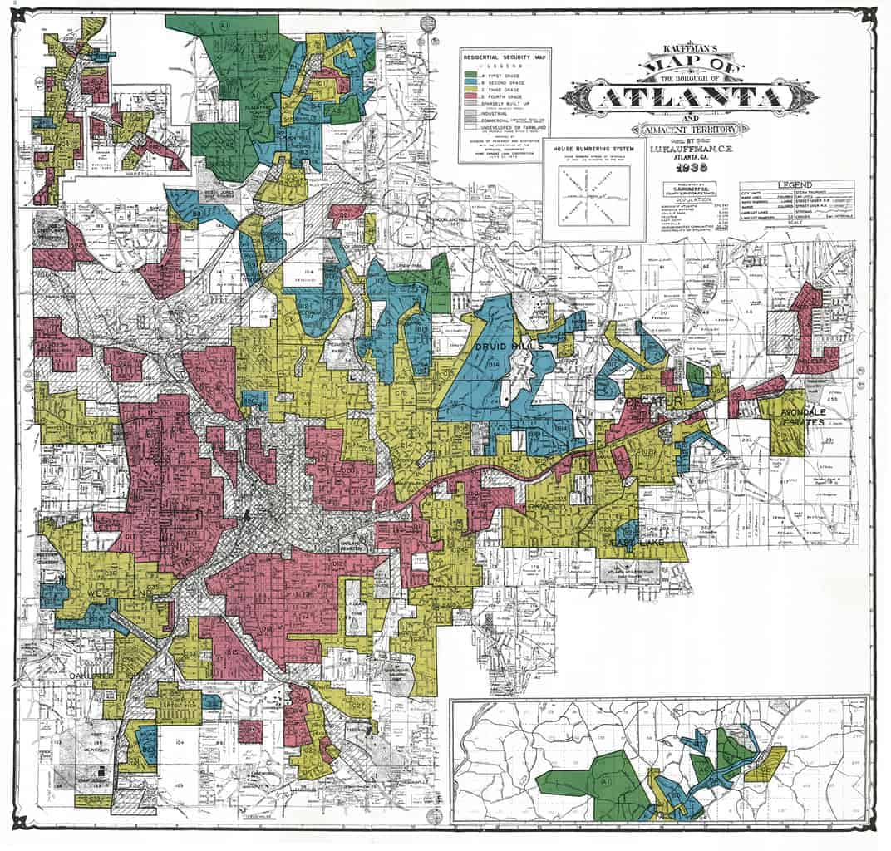

Preface
Many of the data visualizations used are stylized with some having elements, including axis labels, removed for the sake of simplicity. When viewing data visualizations, keep in mind the direction of data more than what individual numeric values may be. As a final note, it could be possible that the realities of those experiencing houselessness over the past decade have been entirely different from what are identified as national trends, and were just masked under family houselessness, which is sometimes difficult to track accurately, especially given the limitations of the PIT count system, which only records individuals that can be found on the street one night a year. Data can be hard.
Background and Overview
When speaking about experiencing houselessness in the public space we are not often asked to think of the plight faced by those with few places to go, but instead to pity the poor homeowners who must bear witness. It is not the fault of the system that those people are without houses, it is fault on their own parts for forcing everyone to have to look at them. This is dehumanizing. Even less often though, are we asked to look at the racial disparities in communities experiencing houselessness that we dehumanize. The population experiencing houselessness in the United States is nearly 40% percent Black, triple the respective size of the Black community in America at large. This naturally leads to a simple question, why is the rate of people experiencing houselessness among Black Americans so high relative to the nation at large? Moreover, how could houselessness overall be combatted and why have such policies not been put in place? The next series of sections will explore these questions, first, by identifying potential factors behind houselessness, and then seeing if those factors are more prevalent or extreme among Black Americans than the national average, along with a look at why that may be the case through a historical lens. Finally, the last sections will discuss policy changes along with notes on how the public perception of those experiencing houselessness through portrayals in media has prevented those policy measures from being implemented. All data will be included at the end in the references section.
Visualization Data Sources:
Homelessness in America (GitHub)^[Homelessness in America (GitHub)], FHFA^[Master HPI Data (FHFA)], OECD^[Net National Income Indicator (OECD)], Census Bureau^[Black Income (Census Bureau)], St. Louis Fed^[Black Unemployment (FRED)]
Defining Houselessness
Most people have a very bare understanding of the concept of experiencing houselessness, mainly the part about not having a house, but defining houselessness on a policy level is a bit more layered. What constitutes a home may be vastly different to different people, so when trying to be objective with data, it is important to draw a line in the sand. Much of the data looked at in this paper will be either directly or indirectly sourced from the U.S. Department of Housing and Urban Development (HUD hereinafter), so it follows to use the definition^[Homeless Emergency Assistance and Rapid Transition to Housing: Defining “Homeless” (U.S. Department of Housing and Urban Development)] that they work with. According to the HUD, there are four categories under which a person or persons could be considered as experiencing houselessness, and these four are the ones that will reflect what houselessness means throughout this paper. The definition categories are as follows:
Individuals who lack a fixed, regular, and adequate nighttime residence. This includes people who may reside or have resided in emergency shelters.
Individuals and families who are in imminent danger of losing their primary nighttime residence.
Unaccompanied youth and families with children and youth who are defined as homeless under other federal statutes who do not otherwise qualify as homeless under this definition.
Individuals and families who are fleeing, or are trying to flee, domestic violence, dating violence, sexual assault, stalking, or other dangerous or life-threatening conditions that relate to violence against the individual or a family member.
Elements contributing to houselessness tend to revolve around interruptions in the ability of a person or series of persons to carry out necessary activities to maintain their housing status. These include, but are by no means limited to, unemployment, domestic violence, substance abuse, incarceration, housing costs (lack of affordable housing), and changes in income level.^[Factors contributing to Homelessness (Homeless Resource Network)]
Identifying Trends in Houselessness
According to annual reports^[2007, 2009, and 2012 Annual Homeless Assessment Report to Congress, July 2008, June 2010, and December 2012 (U.S. Department of Housing and Urban Development)] issued by the HUD to congress, the number of Americans who may be experiencing houselessness on any given night has been seen to have had a steady decline over the past decade with the reported Point-in-Time (PIT hereinafter) number as of January 2007 being 671,888, a decrease of approximately 6 percent compared against what was reported the previous year. Following the Great Recession, the rate of persons experiencing houselessness continued to decrease despite the rise in foreclosures as the housing bubble burst. The reported PIT number as of January 2009 was 643,067, the same time when housing prices were still dropping. Even by the beginning of 2012 when median housing prices had hit a new relatively low, the PIT number as of January was 633,782, although notably an increase from the previous year still overall saw a continuation of the decrease which had been taking place. This is important to find, not because of the actual change in housing prices, but because of what was resulting during this period. Established and time-tested financial institutions were collapsing under the weight of mass-defaults on mortgages, and the national economy was being put to the fire. During the midst of one of the worst recessions in American history, the number of recorded Americans experiencing houselessness was still generally on the downturn. This removes the notion of houselessness being strictly tied to market conditions, and this will be shown further when seen over a broader period. Maybe in the absence of necessary services the recession would have played a far greater role in pushing households off the deep end but that would only be evidence that houselessness would be a result of poor policy over economic realities.
What can be seen most clearly when comparing trends in yearly housing pricing against trends in PIT numbers and unemployment is that even during periods where the housing market was recovering, PIT counts continued decreasing. Houselessness is a crisis of affordability, of being unable to meet growing costs, not simply of the costs themselves. People may have a variety of reasons for not being able to get something, why else would there be multiple categories by which houselessness is defined, but that reason is often just money. That difference can be shown by the change in unemployment rates as the national economy recovered. While the relationship between the two is not exact, PIT counts still decreased as unemployment rose, decreases in unemployment do appear to have been associated with greater reductions in PIT counts, even as housing prices rebounded. Comparing national income rates with PIT counts shows a similar trend to unemployment.
Elements like national income are associated with reductions in pit counts in some way, what is also clear from data collected and the data on display here is that the conversation on houselessness, while being a national one, is very probably heavily dependent on conditioned elements. There is in both cases, national unemployment and income, a reduction in houselessness overall regardless of the direction of either element. If these elements then, while being some of the most important determinants of houselessness, are not able to be identified as absolutely impactful, then the question becomes one of if these elements are more impactful when under certain conditions. If they can be identified as such, and in conjunction with other elements, like differences among states or regions, then this could be understood as government failing to meet the needs of its citizens with policy. This is all to say that there is, in fact, an important condition to consider here, race. Nearly 40% of persons experiencing houselessness are Black, and that jumps to over 50% of families.^[Homelessness and Racial Disparities, October 2020 (National Alliance to End Homelessness)]
A History of Oppression and Housing Discrimination
There are two primary elements to find. First, the extent to which centuries of oppressive and racist policies continue to affect modern communities in preventing the building of wealth, and second, the extent to which housing discrimination in particular has been involved. It should be of no surprise that enslavement prevented economic progress for Black Americans, what should however be an infinite source of shame for the nation is that this gap in progress has not been rectified, in fact, it has broadened as the effects of sweeping measures linger. Black Americans have been deprived of land, of labor, capital, and at many points of the tools to do anything about it. Jim Crow policies pushed children into schools that were underfunded and unprepared to even pretend to be supplying education at equal standards, and amazingly, even as outright segregation was outlawed, school districts across the country, particularly in areas like New York City, remain deeply segregated.^[Still Separate, Still Unequal: Teaching about School Segregation and Educational Inequality, May 2019 (New York Times)] At just this point a line could be drawn. It cannot be expected of an entire community of people to work from an uneven starting point and somehow reach the same endpoint in the same period. Yet things continue. Policies of unjust mass incarceration have separated Black American families, causing untold harm to children by completely removing parental figures in influential years, and leaving the parent that remains, if one remains, to simultaneously care for the child and work as a single parent.^[Broken Hearts and Broken Homes: How Mass Incarceration Impacts Children and Families (May), May 2019 (Duke University)] And these rates of incarceration are unjust, greatly fueled by minor drug offenses for which Black Americans have been historically targeted^[Nixon’s Drug War, An Excuse To Lock Up Blacks And Protesters, Continues, March 2016 (Forbers)], particularly in cases of marijuana, heroin, and crack cocaine, which was treated with much greater severity even for distribution than cocaine was, even though crack was just a far cheaper offshoot of cocaine.^[How Crack Cocaine Destroyed Black Communities in the United States, May 2020 (The African Exponent)] Even in where Black Americans live there have been policies that worked to their direct detriment. Housing discrimination. Entire towns wrote into their charters that only White residents would be permitted^[The Case for Reparations, June 2014 (The Atlantic)] and in areas with sizable Black communities, policies like redlining across American cities made sure to absolute drive neighborhoods with a strong Black American presence into the ground by listing those areas as hazardous and starving them of investment and support in the form of federally insured loans from the government.^[The Roots of Redlining: Academic, Governmental, and Professional Networks in the Making of the New Deal Lending Regime, June 2021 (Oxford Academic, The Journal of American History)] On average, Black communities are poorer^[Inequalities Persist Despite Decline in Poverty For All Major Race and Hispanic Origin Groups, September 2020 (Census Bureau)], see underfunded education, and are more likely to see their members incarcerated, and all of these elements can be traced to policies still within the realm of recent history.^[Redlining: The Origin Story of Institutional Racism, April 2019 (The Root)]
 {width=50%} Redlined map of Atlanta, GA
Houselessness is an issue of government failing to meet the needs of its citizens with policy, and the government has hardly ever pretended to meet the needs of its Black citizens.
Reanalysis of Trends
Unemployment and income levels have been shown to have an impact on houselessness, and given the evidence supplied behind why Black communities often face greater levels of houselessness it is worth looking at by how much unemployment and income levels differ for Black Americans compared to the whole. With a solid difference found both aspects would be confirmed.
There is clear evidence of both disparities in employment and income, this furthers that historic and present policy decisions have continued to push Black Americans towards an economic position that is worse situated than that of White Americans, or, at least, have not acted to mend the rift.
Policy Initiatives
On the national level, individuals and families across the board are being pushed closer to the edge as costs of living outpace income, but as was said earlier, this is a crisis of affordability, and while rising costs of living are difficult enough to bear as is^[America’s Rental Housing: Evolving Markets and Needs, 2013 (Joint Center for Housing Studies of Harvard University)], Black American communities find themselves doubly-assaulted by the simple fact that while costs go up everywhere, they still have less money to meet those costs. Solutions to such an issue can range from raising the minimum wage for all Americans, subsidizing housing and rental costs for persons and families at risk of becoming houseless^[The Post-Recession Homelessness Epidemic, July 2014 (Next City)], and plainly giving people homes.^[Solutions, 2021 (National Alliance to End Homelessness)]More targeted solutions specifically for Black Americans could revolve around investing in infrastructure and businesses in historically Black communities and criminal justice reform aimed at preventing the destruction of families and the limiting of cash bail.
Popular Media and Public Perception
What holds back rational policy initiatives is poor public perception of persons experiencing houselessness, which has been compounded by portrayals in media. Those experiencing houselessness are presented as failures in a difficult world, a sad story to be sure, but not one to be aided. It is their fault for allowing themselves to become houseless. To give credit to national media and those who hold this perception, any other more correct portrayal would actually need a level of introspection that most do not want to endure. The reality is that most American citizens are far closer to experiencing houselessness than they would like to imagine, and it is easier to just blame individuals for failing than to blame a system not supplying support to people in need.^[Homeless and Hopeless: Resignation in News Media Constructions of Homelessness as a Social Problem Constructions of Homelessness as a Social Problem, 1992 (University of Pennsylvania)]
Concluding Points and the Future
Houselessness will continue throughout the United States for however long earnest steps are not taken to combat the problems behind it. PIT counts of houselessness have increased in the years since those in the visualizations presented. Only time will tell how much damage the COVID-19 pandemic has done. Moreover, the unequal distribution of who is experiencing houselessness will almost certainly persist in conjunction with houselessness overall as there appears to have been no real alteration of policies which keep the environment in which such inequalities may be fostered. Things are not all doom and gloom though, there are still fewer people experiencing houselessness than there were even prior to the Great Recession. How these trends continue relies on us.